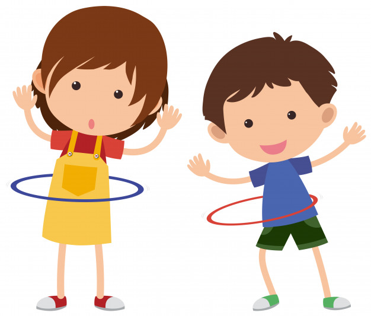

-

¡Hora de trabajar!
Trabajos manuales cristianos que tienen significado para niños de todas las edades. ¡Perfectos para la escuela dominical o la escuelita bíblica de verano! -
¡Que se escuche muy alto!
Cantos cristianos que ayudan a niños a entrar en la presencia de Dios con gozo y dando gracias. -

¡Estirate! ¡Salta! ¡Corre!
Juegos cristianos llenos con acción que les enseña la Palabra de Dios a los niños.